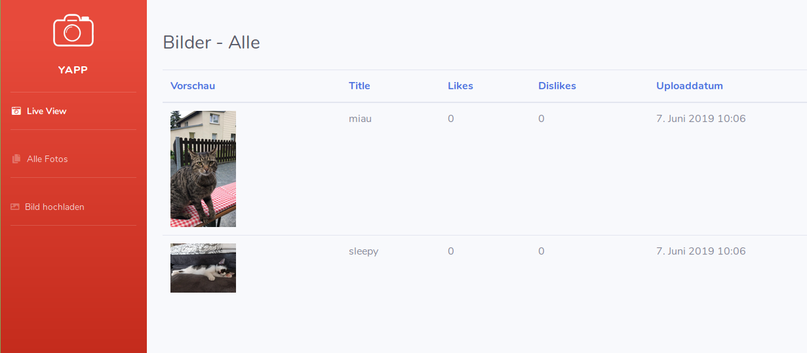
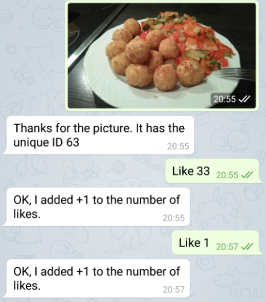

Usage¶
This documentation page describes how you can use and interact with PPP2.
Web Interface¶
After you started the application via the ppp2.sh wrapper script you can open your web browser and navigate to the start/overview page of PPP2 (e.g. 127.0.0.1:8000)
If you click on Live Mode you can start the live presentation of your party pictures. There are two views available:
Normal Mode: The Normal Mode shows the menu bar and some meta data for this picture (e.g. title or number of likes/dislikes).
Full Screen: Just shows the picture without any additional information.
There is also the normal Django administrator interface available via the ‘/admin’ suffix. With admin interface you can rename pictures, delete them or adjust the number of likes and dislikes.
Messenger Interface¶
After you opened a conversation with your bot you can start to interact with it.
Here is a list of the currently supported commands and message types:
Text Message “get worst #n”: Returns the #n most disliked pictures, e.g. get worst 6
Text Message “get top #n”: Returns the #n most liked pictures, e.g. get top 6
Text Message “get picture #n”: Returns the picture with the number #n, e.g. get picture 1234
Text Message “set title #n TITLE”: Sets the title for the picture with the #n, e.g. set title 1234 FOOBAR (Space symbols are used for the separation of the command components)
Text Message “like #n”: Increases the number of likes for the picture with ID #n by one e.g. like 1234
Text Message “dislike #n”: Increases the number of dislikes for the picture with ID #n by one, e.g. dislike 1234
Photo Message: Photo will be downloaded, stored in the upload directory and displayed in the Live Mode